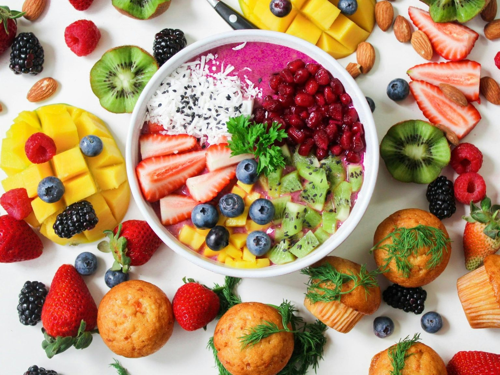
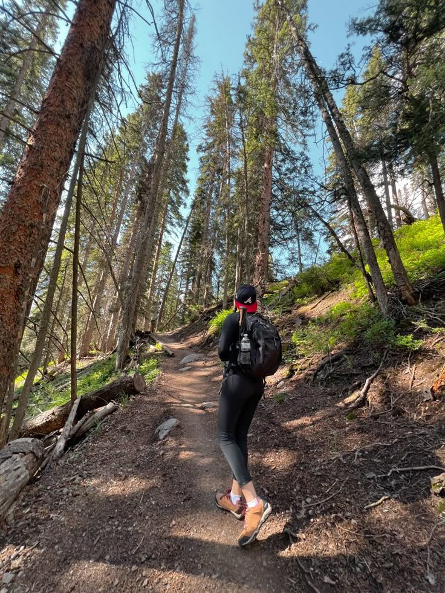
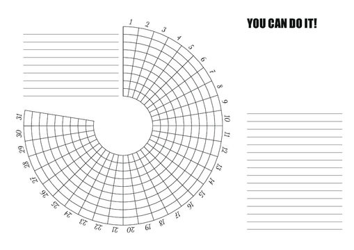

Mood Board 2026
2026 is going to be MY year!

Goals for 2026
1. Learn how to cook three new meals from scratch
2. Read at least one book every month
3. Start a daily journaling habit
4. Go on a solo day trip to somewhere new
5. Try a new hobby like painting, photography, or baking
6. Exercise consistently at least three times a week
7. Limit screen time and spend more time outdoors

Habit Tracker

I plan to use a habit tracker to stay more consistent with my daily routines and keep myself accountable in a simple, visual way. Each day, I’ll track a mix of practical and random habits, like drinking enough water, getting at least seven hours of sleep, and spending less time on my phone, along with more fun goals like practicing a creative hobby, going outside for fresh air, or even remembering to stretch. By checking things off regularly, I’ll be able to see patterns in my behavior, stay motivated, and slowly build better habits over time.